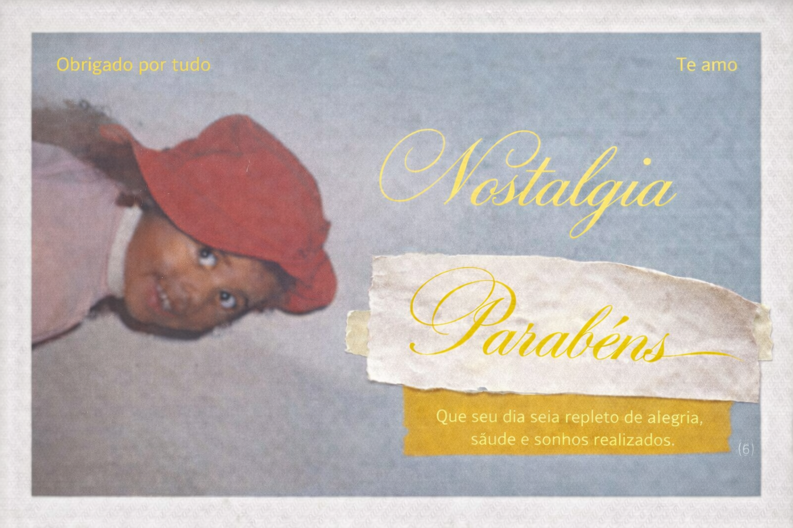
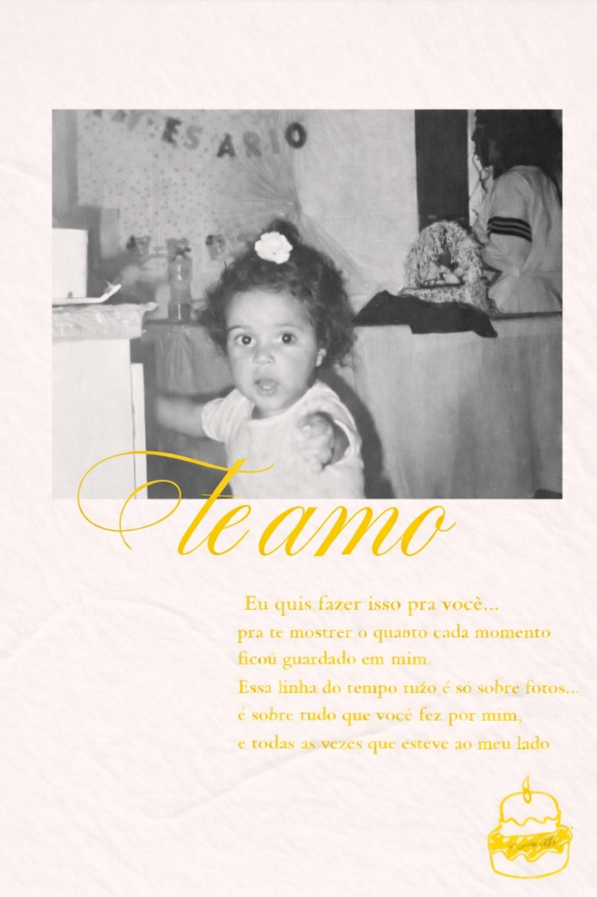
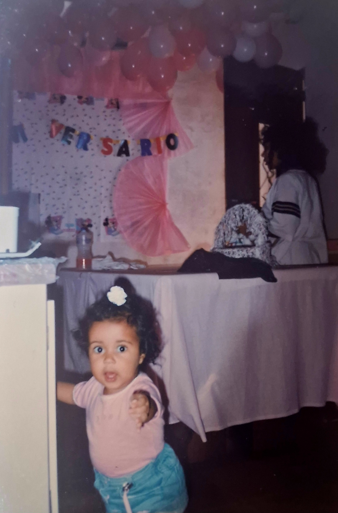
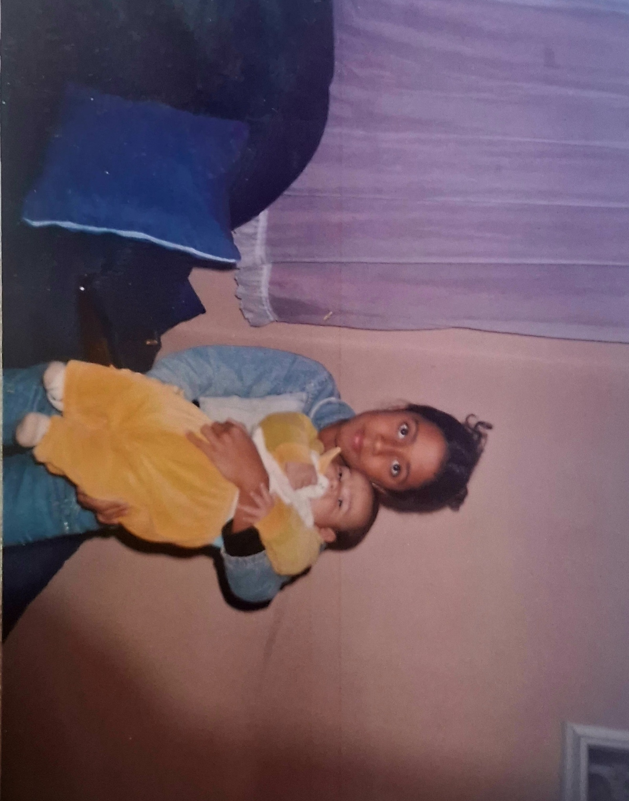
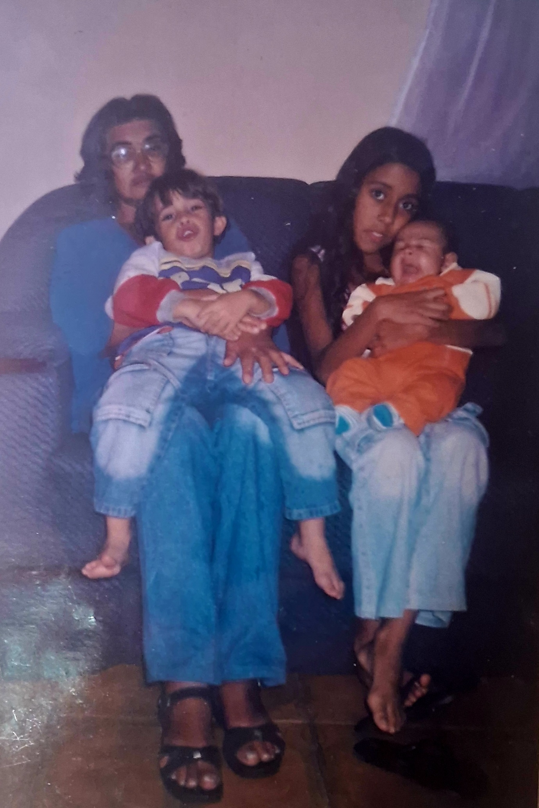

Antes de tudo... você também era só uma criança, cheia de sonhos e sem imaginar tudo que ainda viria pela frente.

Desde o início você cuidou de mim... mesmo sendo tão nova, assumiu uma responsabilidade enorme e nunca saiu do meu lado.

Você cuidava de mim e do Matheus ao mesmo tempo, e mesmo assim nunca deixou faltar amor.